In this lab, we will explore four commonly used probability distributions, and learn how to explore other distributions.
In lecture, you learned about several discrete distributions, such as the binomial and Poisson distributions, and several continuous distributions, such as the uniform and normal distributions. However, you might still be unclear about which parameters describe each distribution, and how these parameters affect the shape or location of the distribution. So, we are going to take a graphical approach to understand these distributions. First, we will look over the functions that represent the random variables in R. Second, we will calculate the probabilities or probability densities for each random variable. Lastly, we will graph the random variables, alter the parameters, predict how the graph is going to change, and then see whether we are correct.
The terms random variable and probability distribution are often used as synonyms. A random variable is the equation used to calculate probabilities or densities, and a probability distribution is the graphical representation of the equation. Thus, both terms represent the same thing because both an equation or graph can be used to figure out a proability or density for a given x value.
First let’s look at the different distributions in R. Open the pdf version of the R manual. Go to the “Help” menu, and then “R Help”. Now look in the lower, right corner of R Studio. You can also view “An Introduction to R” as a PDF by clicking here. Go to Chapter 8 Probability Distributions. A table lists all the distributions, the name of the function that describes that distribution, and the arguments of the function. Look up the binomial, Poisson, uniform, and normal distributions. Do the arguments make sense?
Now here is the trick to get these functions to work in R. R provides several different outputs for each distribution, which you specify by adding either d, p, r, or q in front of the function for the distribution.
For example, if I wanted the density or to plot the PDF of a uniform distribution, then I would type dunif() with the correct arguments. If I wanted random values from the binomial distribution then I would type rbinom() with the correct arguments.
In R there are functions for many random variables. But to start, we are going to focus on the binomial and Poisson distributions.
Let us first work through an example by hand, and then see how much easier it is with R. We will look at the occurrence of meadow beauty, which is a flower, in towns in Massachusetts, and ask the question what is the probability that meadow beauty will occur in 10 out of 30 towns when the probability that meadow beauty is present is 0.2. Remember the binomial distribution can help you answer this question (because you know the probability of success, 0.2, and the number of trials, 30 towns).
Plug in all the numbers into the equation for the binomial equation. Remember that X represents number of successes of interest, n is the number of trials, and p is the probability of success.
\[ P(X)=\frac{n!}{X!(n-X)!}p^X(1-p)^{n-X} \]
You can use the function factorial() to calculate the factorials \(n!\), \(X!\), and \((n-X)!\).
Be aware that the binomial coefficient can’t be calculated with factorial() when \(n\) is large. For example, try your calculation with 350 towns. To solve this problem, you can replace the first half of the equation \(\frac{n!}{X!(n-X)!}\) with choose(350,10). Now did it work? It should have.
We can now use the binomial equation that is built into R, which is the function dbinom(). We put d in front of binom because we want the probability density (i.e., the PDF). This function requires 3 arguments in the following order. The first is \(X\), the second is \(n\), and the last is \(p\). Did you get the same answer as above?
dbinom(10, 30, 0.2)## [1] 0.03547089Again let us first calculate an example by hand, and then use R to do the same calculation. We will look at the number of hemlock trees in a 5 meter-squared plot. A previous study found that on average there were 2.1 trees per plot. What is the proability of finding 6 trees in a plot?
Plug in all the numbers into the equation for the Poisson distribution. Remember \(X\) is the number of successes of interest, and \(\lambda\) is the rate parameter, also called lambda (i.e., the mean and the variance of the distribution).
\[ P(X)=\frac{\lambda^X e^{-\lambda}}{X!} \]
We can now use the Poisson equation that is built into R, which is the function dpois(). Again, we put d in front of pois because we want the probability density (i.e., the PDF). This function requires 2 arguments. The first is \(X\), and the second is \(\lambda\). Did you get the same answer as above? I hope so.
dpois(6, 2.1)## [1] 0.01458696You should always check with a simple example to make sure a program is doing what you expect.
It is often very helpful to plot a random variable, so you can visualize a probability distribution and how the parameters that describe a distribution affect its location and shape.
Let’s start with the binomial example above. You already calculated the probability of finding meadow beauty in 10 of 30 towns. Now find the proability of all the other possibilities (i.e., 0 … 30). Think about how to create a vector of 0 to 30 counting by ones. Now think about which argument in the function dbinom() should equal this vector. If you cannot figure it out, then make sure to ask me.
You are now all set to graph the distribution (when the number of trials is 30 and the probability of success is 0.2). In the example below, I create an object x to make my code easier to read and modify.
n <- 30
x <- 0:n
y <- dbinom(x, size = n, prob = 0.2)
plot(x, y,
ylab = "Probability", xlab = "Number of towns", #Names for the y and x axes
col = "darkorchid4", pch = 16 #Changes the symbol and color of the points
)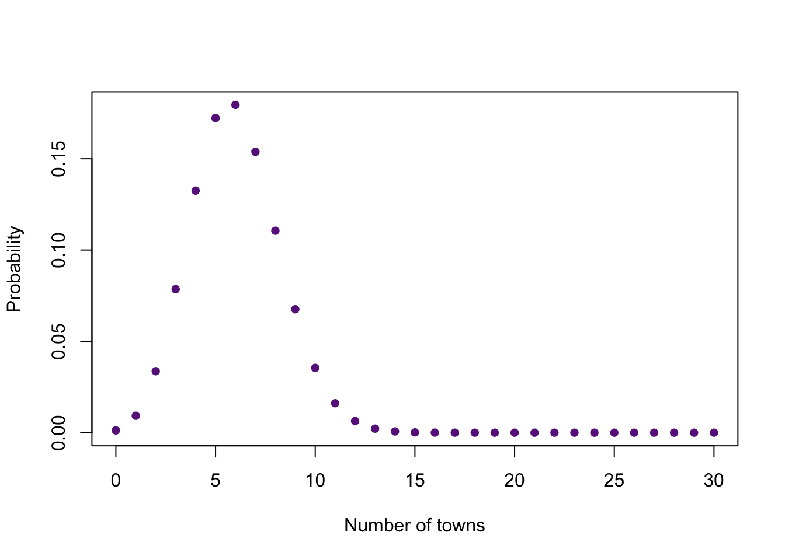
Look and the graph and think carefully about what it means. You should be able to tell me approximately the probability for any number of towns, the most likely number of towns, and the number of towns that are very unlikely.
Now, let’s graph the Poisson example. Calculate the probabilities of 0 … 20 trees in a plot when lambda is 2.1. There is no upper limit to the Poisson distribution, so 20 is just a number which I know is large enough to show the important part of the distribution for the given rate parameter. Now make a plot.
It is important to include both the x and y arguments for plot() because we want the x axis to start at zero, not 1.
Now, let’s change the parameters of binomial and Poisson distributions and see how they affect the graph. Let’s start with the binomial distribution. First, I will recreate the graph we made above. Second, I will add another binomial distribution with a different probability of success to the graph with the function points().
n <- 30
x <- 0:n
y <- dbinom(x, size = n, prob = 0.2)
plot(x, y,
ylab = "Probability", xlab = "Number of towns", #Names for the y and x axes
col = "darkorchid4", pch = 16 #Changes the symbol and color of the points
)
y2 <- dbinom(x, size = n, prob = 0.3)
points(x, y2, col = "yellowgreen", pch = 16)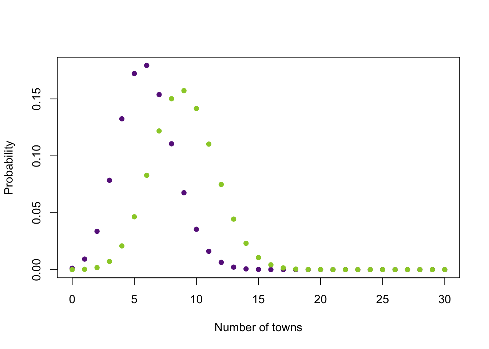
Add more binomial distributions with different probabilities of success. You can look up more names of colors with the function colors(), which requires no arguments.
Now, plot the binomial distribution that represents the situation of 16 trials. Just like above, add more binomial distributions with different probabilities of success to the graph (plot whatever probabilties of success you like). Please show me your graph. How does the number of trials and probability of success affect the distribution?
Now let’s explore the Poisson distribution. Replot the example for the Poisson distribution. Now add additional Poisson distributions with different rate parameters. How does the rate parameter affect the distribution?
The uniform distribution is a continuous distribution. So, we are going to plot it with a line, and not points. The function curve() is great for plotting continuous distributions. However, I will also show you how to use the function plot(). The uniform distribution requires two parameters, the minimum and maximum. We use the function dunif() for the PDF of the uniform distribution.
curve(dunif(x, min = 2, max = 6), from = -3, to = 11,
ylab = "Density", xlab = "x")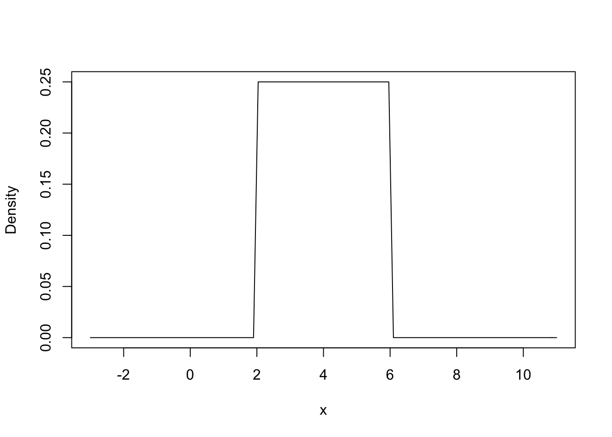
The arguments from and to just tell R where to start and end the line. In other words, the left and right limit of the x axis. You can change the values and see how they affect the graph, but notice they do not affect the distribution.
If you want to use the function plot(), then we need to plot a bunch of points and ask R to plot a line instead of points. I like the function curve() better for continuous distributions.
x <- seq(-3, 11, by = 0.1)
y <- dunif(x, min = 2, max = 6)
plot(x, y, type = "l", #That is the letter l for line, not the number 1
ylab = "Density", xlab = "x")Just like in the binomial and Poisson examples, let’s graph additional uniform distributions with different values for the min and max. For the funtion curve(), you can add the argument add = T to add a line to an existing plot.
curve(dunif(x, min = 2, max = 6), from = -3, to = 11,
ylab = "Density", xlab = "x")
curve(dunif(x, min = 1, max = 8), add = T, col = "darkred")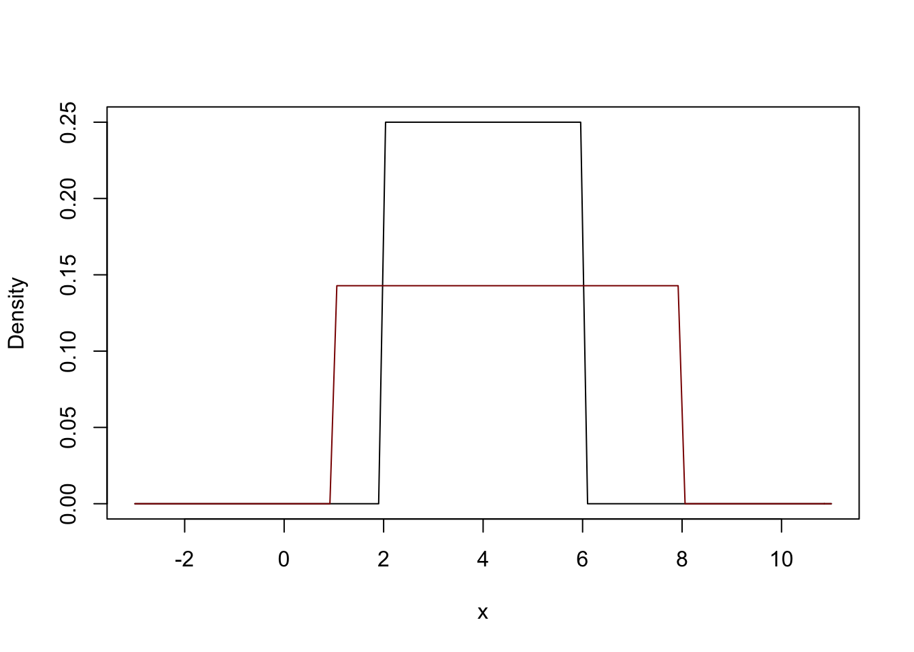
Continue to add more uniform distributions with different min and max values. You should understand how the minimum and maximum affect the uniform distribution.
The normal distribution is another continuous distribution. So, we will plot it with a line, and not points. The normal distribution requires two parameters, the mean and standard deviation. We use the function dnorm() for the PDF of the normal distribution.
curve(dnorm(x, mean = 10, sd = 3), from = 0, to = 20,
ylab = "Density", xlab = "x")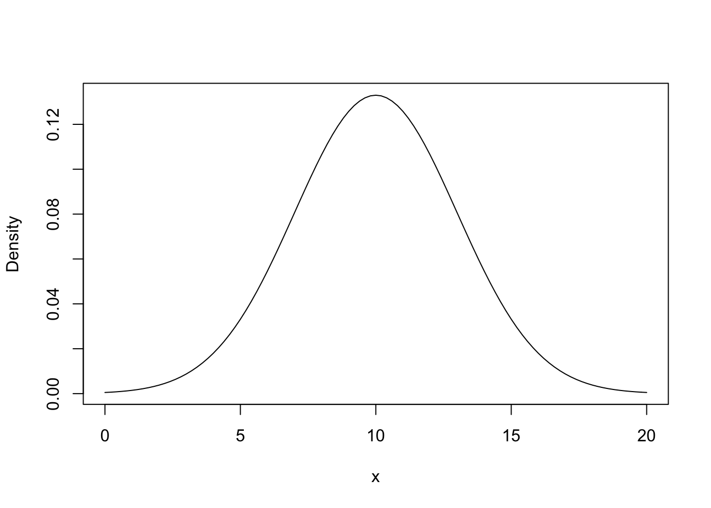
Now add more normal distributions with different means and standard deviations. Pay close attention to how the mean and standard deviation affect the distribution.
There are 3 common representations for a random variable. Typically people think of the probability density function when they visualize a distribution. However, we can represent a distribution with a cummulative density function or a quantile density function.
So far in this lab, we have created graphs of the PDF for four distributions. We put the letter d in front of the R name for each function, and then include the appropriate arguments. Here are two example, one of the discrete Poisson distribution and one of the continuous normal distribution.
#Poisson
plot(0:10, dpois(0:10, 0.1), pch = 16, ylab = "Probability")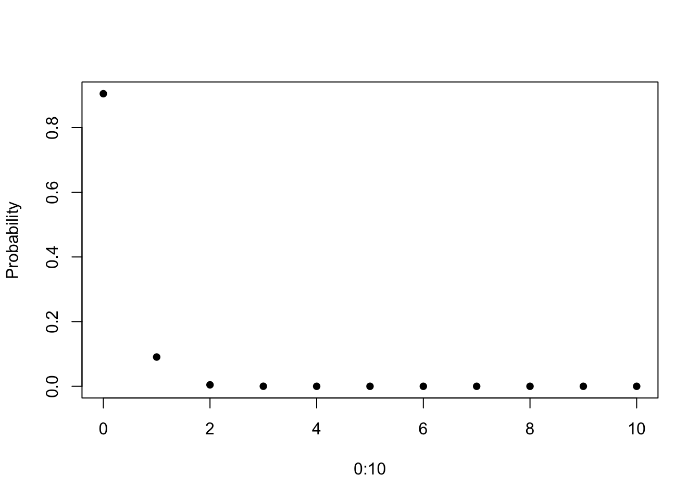
#Normal
curve(dnorm(x, 5, 1), 0, 10, ylab = "Density")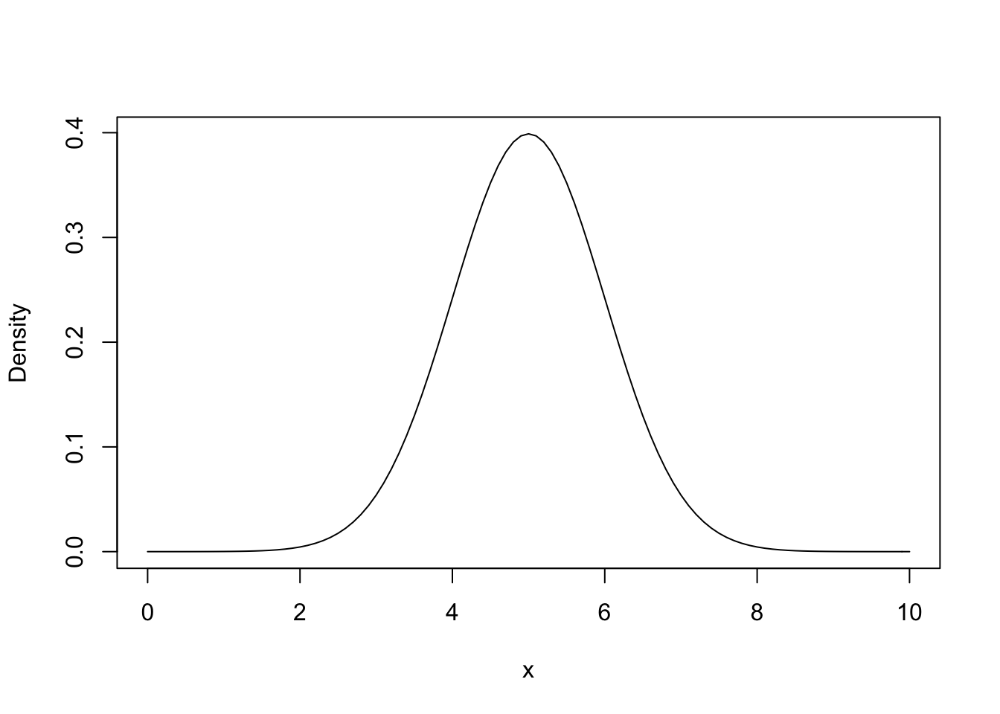
Both of these graphs should look familar because they are similar to what we created in the previous sections.
The cummulative density function (CDF) represents the probability of getting a number equal or less than a particular value. For example, if we want to know the probability of flipping 0, 1, 2, or 3 heads when we flip a coin 8 times, then we can use the CDF to quickly get this answer. We put the letter p in front of the R name of a distribution. The CDF always gives you a probability, regardless of whether the distribution is discrete or continuous, and that is why you use the letter p.
pbinom(3, size = 8, prob = 0.5) ## [1] 0.3632813sum(dbinom(0:3, size = 8, prob = 0.5)) #Same as above## [1] 0.3632813You have already learned how to create plots for discrete and continuous distributions. So, use what you learned above to plot the CDF of a distribution. For example, below is a plot of the PDF in purple and CDF in green for the binomial distribution that represents flipping a fair coin 8 times.
x <- 0:8
plot(x, pbinom(x, size = 8, prob = 0.5),
ylab = "Probability", xlab = "Number of heads",
col = "darkorchid4", pch = 16)
text(6, 0.8, "CDF", col = "darkorchid4")
points(x, dbinom(x, size = 8, prob = 0.5), col = "darkgreen", pch = 16)
text(6, 0.3, "PDF", col = "darkgreen")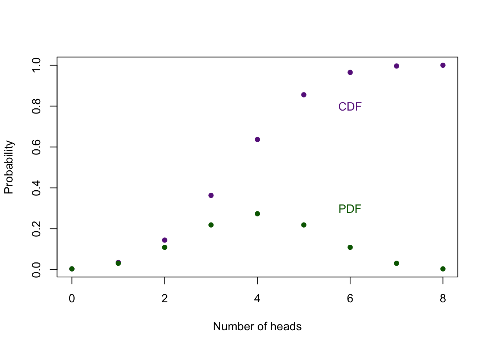
Think about why the CDF approaches 1, and how the PDF and CDF are related.
Now make a similar graph for the Poisson, uniform, and normal distributions, so you can compare the CDF and PDF.
It is very important that you understand what the PDF and CDF represent. In particular, the CDF is important when we calculate a p value.
There is also a quantile function. It is easiest to think about the quantile function as the inverse of the CDF. For the CDF, x represent a given value and the CDF returns the probability of getting a number equal to or less than x. In other words, the x axis represent values of interest and the y value represents the proability. For the quantile function, x represents the probability and the quantile function returns the value associated with probability. We put the letter q if front of the R name of the distribution to get the quantile function. Here is a quick example to illustrate the what the quantile function of a distribution does.
pnorm(0, 0, 1) #Gives the probability of getting 0 or less from the standard normal distribution## [1] 0.5qnorm(0.5, 0, 1) #Gives the value associated with 0.5 proability from the standard normal distribution## [1] 0Below is the quantile plot and CDF for a standard normal distribution.
#Quantile function
curve(qnorm(x, 0, 1), 0, 1, col = "darkred", main = "Quantile function")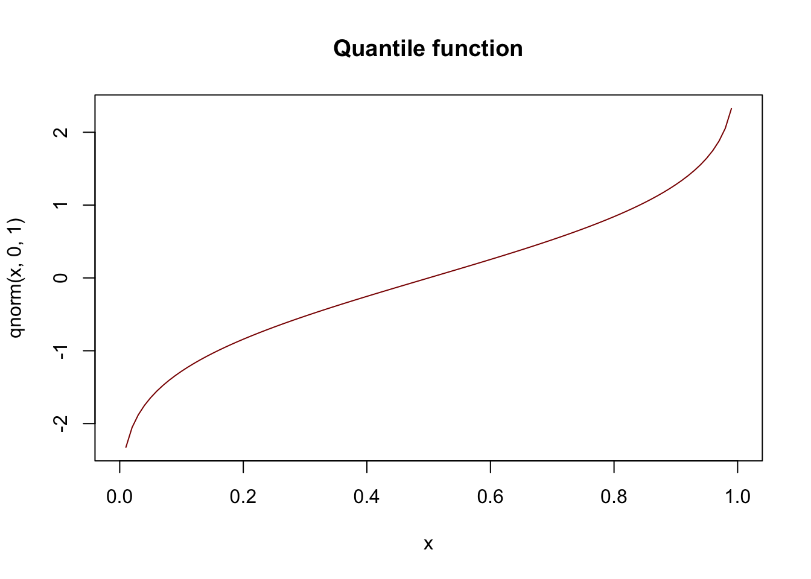
#CDF
curve(pnorm(x, 0, 1), -2, 2, col = "darkorange", main = "CDF")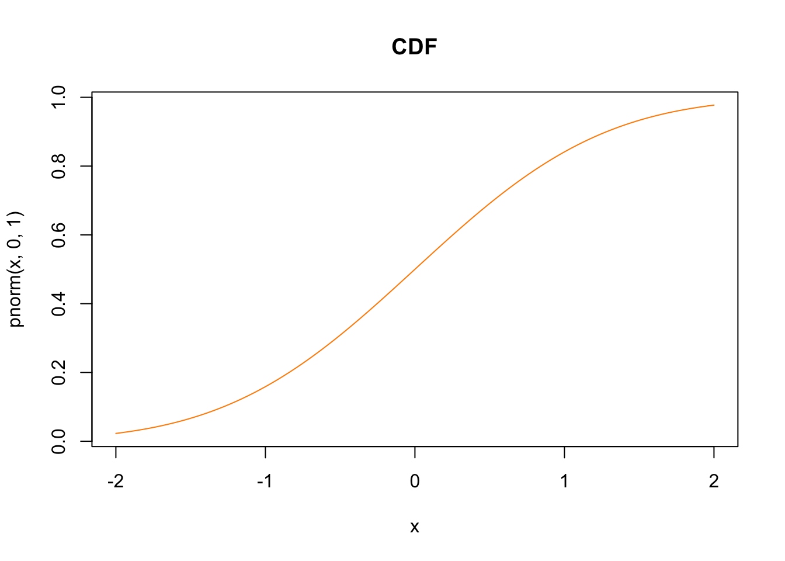
Look carefully at both the x and y axes for both graphs. You should understand why the x axis ranges from 0 to 1 for quantile function, and why the y axis ranges from 0 to 1 for the CDF.
Now create plots of for the quantile function for the other distributions.
We can also easily pull random values from a given distribution. To do this we include the letter r in front of the R name of the distribution. The first argument in the function is the number of random variables that you want from the distribution. Let’s say I want 51 random values from a uniform distribution with a min of 1.23, and max of 5.
runif(51, min = 1.23, max = 5)## [1] 2.195784 1.549079 3.202119 3.603719 2.275920 3.817506 1.488321 1.996030
## [9] 1.842372 2.909571 2.080972 3.316008 1.896007 4.513724 2.338833 2.632883
## [17] 2.519365 1.620466 2.087366 4.751934 3.643623 4.435510 4.007707 2.585601
## [25] 4.421490 3.698270 4.865031 2.616857 3.553665 4.948678 1.843471 4.368569
## [33] 2.607429 1.603027 3.220413 3.601721 4.281343 1.649664 3.329569 3.430404
## [41] 3.271087 3.720829 2.055669 4.215987 2.636274 3.263903 3.324049 4.464616
## [49] 2.612079 3.100156 1.484417How about 156 random values from a standard normal distribution?
rnorm(156) #The default values are mean = 0 and sd = 1, so I can leave out the mean and sd for a standard normal distribution## [1] -1.68084597 0.31024976 -2.40473797 -0.54718220 -0.13471359 0.68265507
## [7] -0.21519263 0.27882115 0.96103734 -0.34183733 -1.49572146 0.63407141
## [13] -0.50829465 -1.64183462 2.53327581 -0.07783919 1.37046358 1.66330123
## [19] -0.43480751 0.21027244 -0.47508813 2.28089607 -0.18449429 1.46728713
## [25] -0.49194226 -0.18354278 1.31326196 -0.92029596 -0.17088056 1.94768007
## [31] -0.35257343 -1.29599311 -0.42358924 0.34853776 0.21058721 0.20647486
## [37] 1.37265333 1.19111986 -1.47878630 -0.72370672 1.21301387 -0.15467598
## [43] -0.11507053 0.50106289 -1.16472078 0.35051257 -0.69820015 -0.73450954
## [49] 0.14320515 -0.41229763 1.79190318 0.87309764 0.15131386 -0.02246485
## [55] 1.03194976 0.34408612 -0.94085948 -1.31998265 0.23390821 0.32705602
## [61] -0.09120279 1.39257143 1.87258241 2.22853733 -0.93207477 -0.51070552
## [67] -0.55306121 0.28718973 -1.10402151 1.73861699 -0.43036137 -0.32384495
## [73] 0.63261011 0.40260122 0.15045967 -1.15323879 0.12757164 -1.04440475
## [79] 1.32912269 0.07151508 -0.50190237 0.80751575 -0.97909027 1.02847602
## [85] -0.38123546 -0.31936600 -0.76208775 -1.47820914 -0.39686875 1.57866175
## [91] 1.10519168 -0.01495000 1.13384493 1.01203583 -0.78310104 -0.06097753
## [97] -1.48700608 -0.22632019 -2.70675105 -1.19424789 -0.94778007 2.37397668
## [103] -1.70806738 1.69579405 1.50898724 -0.39248816 0.32090197 0.63905835
## [109] 0.07728063 1.46839722 0.05070413 -0.78384334 -1.74223879 0.15559197
## [115] -0.17247330 -1.24079035 0.48327599 -0.22006634 0.32610039 -0.09298037
## [121] 1.83949581 0.51052074 -1.02116036 -0.93926554 0.27165385 -0.84604066
## [127] -1.44967849 -1.41322691 -2.23989262 1.08375227 1.63612053 -1.48736610
## [133] 0.41668961 0.62334111 0.40315973 -0.08860339 2.11897032 -0.56895526
## [139] -1.34219679 0.06437028 2.76560166 -1.15056810 0.02630515 -0.76719967
## [145] -0.09460154 0.67939646 0.09056430 0.19356491 1.14079203 0.86015755
## [151] 0.61003355 -0.23426522 -1.52343118 -0.46614812 -0.95867625 0.09493778How about 6 random values from the Poisson distribution with rate parameter of 16.3?
rpois(6, 16.3)## [1] 18 14 22 21 19 18You get the idea.
Pull 1000 values from a standard normal distribution and plot them with a histogram.
You should be able to quickly calculate the probability density and the cummulative probability for the binomial, Poisson, uniform, and normal distributions.
Let’s walk through a few examples.
What is the density at 23 for a normal distribution with a mean of 34 and a standard deviation of 12? First, what is the R name of the function for a normal distribution? Second, what letter that you want to append to the beginning of the function? Lastly, what are the parameters needed for this function to work?
dnorm(23, mean = 34, sd = 12)## [1] 0.02184061What is the probability of getting 5 or fewers eggs hatching out of 12, when the probability of hatching is 0.61?
pbinom(5, size = 12, p = 0.61)## [1] 0.1411446The cumulative probability of 0.2 is associated with which value on a uniform distribution with a min of 6.12, and a max of 9.34.
qunif(0.5, min = 6.12, max = 9.34)## [1] 7.73Like we saw above, you can provide the arguments with vectors of numbers and R will return the answers associated with each value in the vector. For example, say you want to know the proability of getting 0 out of 10 outcomes, 2 out of 10, and 5 out of 10 when the probability of success is 0.2. Of course you would use the binomial distribution because you know the number of trials and the probability of success.
dbinom(c(0,2,5), size = 10, p = 0.2)## [1] 0.10737418 0.30198989 0.02642412Or if you wanted all the possible outcomes, you could do the following.
dbinom(0:10, size = 10, p = 0.2)## [1] 0.1073741824 0.2684354560 0.3019898880 0.2013265920 0.0880803840
## [6] 0.0264241152 0.0055050240 0.0007864320 0.0000737280 0.0000040960
## [11] 0.0000001024Or you are interested in how the probability of finding two seedlings in a quadrat changes as the rate parameter increase for 1 to 20 counting by ones.
dpois(2, 1:20)## [1] 1.839397e-01 2.706706e-01 2.240418e-01 1.465251e-01 8.422434e-02
## [6] 4.461754e-02 2.234111e-02 1.073480e-02 4.998097e-03 2.269996e-03
## [11] 1.010453e-03 4.423833e-04 1.909978e-04 8.148981e-05 3.441401e-05
## [16] 1.440450e-05 5.982210e-06 2.467257e-06 1.011305e-06 4.122307e-07It is important to know how to get the probability of a range of values for a given probability distribution. Let’s start with an easy question. What is the probability of getting a value less that 4 for a normal distribution with a mean of 3.4 and a standard deviation of 5.1? I will first plot the PDF with a vertical line at 4 so we can see the area that we are after. You already know how to make the graph, and you can use the function abline() to plot a line on a graph.
curve(dnorm(x, 3.4, 5.1), -8.4, 14.4, ylab = "Density", xlab = "x")
abline(v = 4)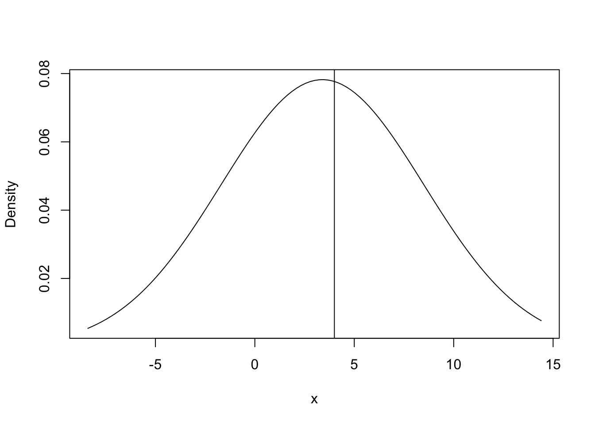
Clearly the probability of getting a value less than 4 is greater than 0.5 because more than half the area under the curve is to the left of the line, but what is the exact value? Remember that the CDF will directly answer this question.
pnorm(4, 3.4, 5.1)## [1] 0.5468263What if we want the value greater than 4? Remember that the total area under the PDF totals to one.
1-pnorm(4, 3.4, 5.1)## [1] 0.4531737How about the probablity of a value greater than 3 but less than 4?
pnorm(4, 3.4, 5.1) - pnorm(3, 3.4, 5.1)## [1] 0.07808388Now calculate the probabilities for the following questions.
You are now set to learn about different distributions with these functions. The goal is to predict how the graph will change when you change one or more parameters. Pick a distribution and plot it. Change the parameters that describe the distribution, and see how the plot changes. You should do this with both the PDF and CDF. When you feel very comfortable with a distribution, then switch to another. At a minimum, you should be able to produce the PDF and CDF for the binomial, Poisson, uniform, and normal distributions, and know the parameters associated with each. If you have time, explore the Student’s t, F, and chi-square.
Here are a few more advanced examples. You are welcome to ignore them.
I want to create a graph that shows what happens when I change the mean of the normal distribution. I also love rainbows, so I want it to look like a rainbow.
mus <- seq(0, 50, by = 5)
#Create a color for each mu in mus
rainbow.colors <- rainbow(length(mus))
curve(dnorm(x, 0, 2), -10, 60, ylab = "Density", xlab = "x")
#Add a bunch of normal distributions to the plot, each with a different mean and color
for(i in 1:length(mus)){
curve(dnorm(x, mus[i], 2), add = T, col = rainbow.colors[i])
}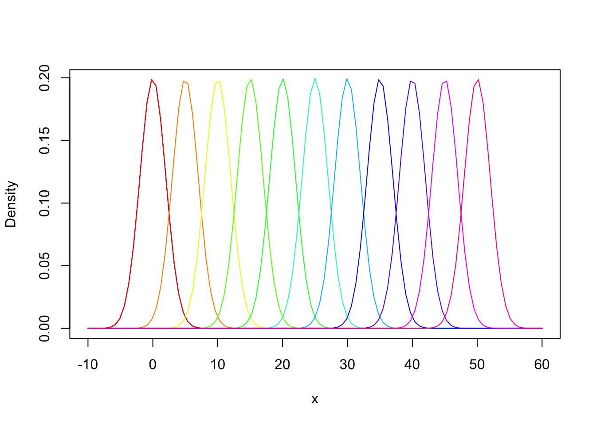
Or I could change the standard deviation and use heat colors.
sds <- seq(1, 101, by = 5)
#Create a color for each mu in mus
heat.colors <- heat.colors(length(mus))
curve(dnorm(x, 0, 1), -30, 30)
for(i in 1:length(mus)){
curve(dnorm(x, 0, sds[i]), add = T, col = heat.colors[i])
}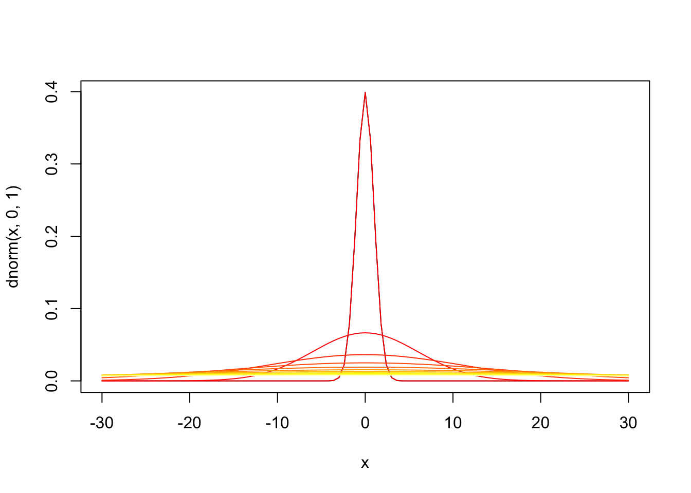